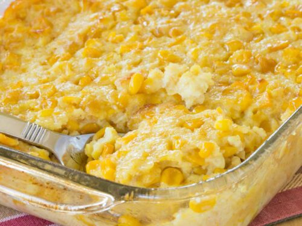

Corn Pudding

Description
Corn PUdding is a Thanksgiving tradition in my wife's family. It has an undeniably sweet and creamy corn flavor, but with a firmer texture than a creamed corn. It's a perfect side for those big holiday meals where plates can get messy and overrun!
Ingredients
- 5 Large Eggs
- 1/3 cup butter, melted and slightly cooled
- 1/4 cup white sugar
- 1/2 cup milk
- 1/4 cup cornstarch
- 1 (15.25 ounce) can whole kernel corn, drained
- 2 (14.75 ounce) cans cream-style corn
Steps
- 1. Preheat Oven to 400 degrees F (200 degrees C). Grease a 2-quart casserole dish
- Whisk eggs lightly in a large bowl. Add milk, melted butter, sugar, and cornstarch; whisk until well combined. Stir in drained corn and cream-style corn until fully blended. Pour mixture into the prepared casserole dish.
- Bake in the preheated oven until golden brown, about 1 hour.